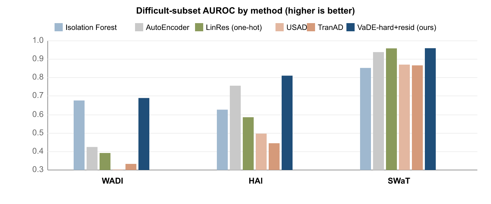

1 School of Computer Science, Faculty of Sciences, Holon Institute of Technology (HIT), 52 Golomb St., Holon 5810201, Israel; alexanderap@hit.ac.il
2 Intelligent Systems, Afeka Academic College of Engineering, 218 Bnei Efraim St., Tel Aviv 6910717, Israel; apersteiny@afeka.ac.il
* Correspondence: apersteiny@afeka.ac.il
Fault detection in networked cyber-physical systems (CPS), which form the sensing and actuation layer of industrial Internet-of-Things deployments, is difficult because faults are rare and poorly represented in available data. Detection must therefore rely on models of normal behaviour rather than representative fault examples. However, existing AI methods often fail because they ignore the unique structure of CPS, where stochastic behaviour is constrained by physical laws, engineered control logic, and numerous operating regimes. More generally, normal CPS behaviour is not a single distribution, but a union of many imbalanced, curved, and sparsely populated regimes. We formalize this structure through ten assumptions, A1–A10, summarized as Massive, Implicit, Imbalanced Multimodality (MIIM). Based on these assumptions, we jointly learn a latent representation and a Gaussian-mixture clustering of operating modes. Anomaly scores are computed directly in latent space rather than from a density estimate or reconstruction error. Aggregate scores are dominated by trivially detectable faults, so we evaluate under raw point-wise metrics with a difficulty split that isolates the stealthy, joint-structure faults a simple per-channel detector cannot see. Across three real CPS attack benchmarks (WADI, HAI, and SWaT), the detector attains the best overall AUROC on every dataset (0.792, 0.933, and 0.991) and leads on the difficult subset over five seeds (0.690, 0.811, and 0.960). On WADI and HAI, whose difficult faults are reconstructable but improbable sensor combinations that reconstruction error cannot separate from normal, the deep detectors USAD and TranAD collapse to 0.30–0.50. The contributions are the MIIM assumptions, the difficulty-stratified protocol, and a latent-only anomaly score.
Keywords: anomaly detection; cyber-physical systems; Internet of Things; industrial IoT; unsupervised learning; variational deep embedding; Gaussian mixture model; sensor time series; fault detection
A modern cyber-physical system (CPS), whether a water-treatment plant, an industrial control loop, or a rotating machine, integrates hundreds of networked sensors, embedded controllers, and physical actuators, the sensing-and-actuation fabric of the industrial Internet of Things (IoT), into a single tightly coupled unit that continuously senses its own state and acts upon it. This complexity puts its faults beyond enumeration: the combinations of component, control mode, and operating condition in which a fault can arise cannot be predefined, tested, or exhaustively sampled before deployment, and many faults develop slowly, as wear, drift, or degradation that shows no obvious symptom until it is well advanced and can escalate into unplanned downtime or a safety-critical failure. Because the faults cannot be specified in advance, they must be discovered from the system’s own behaviour as it operates, which is the task of anomaly detection [1]. That behaviour is richly observable: high-frequency measurements of vibration, current, temperature, pressure, and position, together with internal control signals, are streamed continuously from the device’s sensors as IoT telemetry and, in principle, carry an early signature of almost any developing fault.
The task is commonly framed as characterising the anomalies, but that framing is misleading. Were a representative set of labelled faults available, the task would reduce to supervised classification; in practice genuine faults are rare and the few on record seldom span the ways a system can fail [2], so scarce faults cannot define the decision boundary and, as revisited below, cannot even be spent reliably on model selection. The information lies on the other side of the boundary, in the normal data, which is abundant and rarely exploited in full. Modelling that normal law faithfully is therefore the hard part of the problem, and cyber-physical normal is a law of a particular kind. Shaped by deterministic physics, hard actuator and setpoint limits, and engineered control, it is the union of many bounded, curved operating regimes, some common and many rare, each with legitimately low-density fringes, rather than a single statistical blob. A detector that mis-models this structure fails however it thresholds.
A fault is anything that leaves this union of normal regimes, and the interesting ones stay inside the marginal envelope of every channel while breaking the joint structure: a correlation break, a between-mode pocket, a history-inconsistent state. These faults are invisible to any per-channel range rule, and, as we show, to a reconstruction residual as well.
Two problems make progress on this task hard to measure. The first is evaluation. The dominant metric in the literature, point-adjusted F1, inflates scores so severely that a random anomaly score can beat every published deep model [3, 4]; and even under raw metrics, public CPS benchmarks are dominated by anomalies that a one-line univariate rule already separates [3], so a high headline number certifies little. The second is modelling. If normal is a union of many imbalanced modes, then a global anomaly model cannot represent it (a single blob under-fits the regime structure), a single deep autoencoder alarms on rare-but-valid modes (the trust-eroding false positive), and a reconstruction residual is blind to exactly the joint-structure faults that matter because a flexible decoder reconstructs them faithfully.
This paper makes three contributions. (1) We state the structural assumptions of CPS normal data as an explicit list, A1–A10, that we abbreviate MIIM (Massive, Implicit, Imbalanced Multimodality) and tie each assumption to a concrete choice for modeling normal (§3). (2) We build a detector whose whole design is faithfully modeling that normal law: a jointly learned latent plus explicit Gaussian-mixture mode clustering (VaDE), scored in the latent by a mixture density head and a rare-mode-safe nearest-component likelihood, with two optional heads auto-gated on training-normal signals; a key mechanism inside it is dropping the reconstruction term, which is blind to the hard faults (§4). (3) We evaluate under a fair protocol (raw point-wise metrics, difficulty stratification, raw point-wise F1, train-normal-only calibration) on three real CPS datasets, and compare against classical baselines and against three deep detectors, USAD, TranAD and GDN, re-computed with the same raw metrics (§5–6). The detector wins the combined column and the difficult column on all three datasets, with the largest margins precisely where the MIIM structure is strongest and the slimmest on the one near-unimodal set.
We are explicit about scope. This study covers three datasets with a single trained model per dataset; several results are single-seed and the best-F1 threshold is an oracle (disclosed in §5). We report only raw metrics and we treat the difficult subset, not the headline, as the discriminative test.
Anomaly detection is the unsupervised or semi-supervised task of flagging departures from a model of normal behaviour, adopted precisely because labelled anomalies are too scarce to train a classifier [1, 6, 2]. On time series it must additionally respect temporal and cross-channel dependence [7], and on cyber-physical and industrial control systems it underpins physics-aware intrusion and fault detection [8]. LatAD sits squarely in this line: unsupervised, trained on normal only, and specialised to the multimodal structure of cyber-physical normal behaviour.
A line of critical work shows that the standard evaluation of time-series anomaly detection is unreliable. Kim et al. [3] demonstrate that the ubiquitous point-adjustment protocol (marking an entire ground-truth anomaly segment as detected if any single point in it is flagged) inflates F1 so drastically that a random anomaly score achieves higher point-adjusted F1 than every state-of-the-art model on SWaT and WADI. Garg et al. [4] independently reproduce this inflation and show that simple baselines (PCA, channel-wise autoencoders) beat elaborate deep models once metrics are made rigorous, and that deep methods often fail to detect even simple anomalies. Doshi et al. [9] diagnose the point-adjustment reward structure and propose a rectified evaluation. The critique now spans metrics and benchmarks alike. Wu and Keogh [5] argue that many popular benchmarks are flawed (triviality, mislabelling and unrealistic anomaly density) creating an illusion of progress; and a recent benchmark analysis [10] finds that anomaly segments in multivariate CPS benchmarks are mostly univariate (SWaT and WADI sit among the datasets whose anomalies deviate univariately on close to all timesteps, with no long cross-channel-only segments), so a flat univariate model matches channel-dependent deep detectors.
A parallel critique targets the dominant scoring mechanism itself. Reconstruction-based detectors assume that a model trained to reconstruct normal data reconstructs anomalies worse; Bouman and Heskes [11] show this assumption is unreliable, because anomalies lying far from normal data can be reconstructed perfectly in practice, and Gong et al. [12] earlier showed that a deep autoencoder generalises well enough to rebuild anomalies and miss them. This motivates scoring in a clustered latent rather than through a reconstruction residual. A position paper by Sarfraz et al. [13] draws the two threads together, characterising the field as plagued by flawed evaluation metrics, inconsistent benchmarking, and unjustified design choices, and showing that state-of-the-art deep detectors effectively learn linear mappings that simple baselines reproduce; Wagner et al. [14] re-audit the widely used multivariate benchmarks, discard the ones with erroneous labels, and note the absence of any standard evaluation metric.
LatAD adopts this critique as its evaluation protocol: raw point-wise AUROC, F1 and FPR with no point adjustment for any method; a trivial-detector difficulty split that separates the discriminative difficult subset from the easy majority that carries headline numbers; and re-computation of the deep SOTA baselines (USAD and TranAD) under the same raw metrics rather than their point-adjusted published figures (§5).
Our representation is Variational Deep Embedding (VaDE) [15], a VAE with a Gaussian-mixture latent prior that learns representation and clusters jointly. DAGMM [16] similarly couples an autoencoder with a Gaussian-mixture energy for anomaly detection; we borrow its variance-collapse regularisation but score against explicit per-mode Gaussians in a jointly learned latent rather than a learned-Gaussian energy (§4). Our whitened residual uses the Ledoit–Wolf shrinkage covariance estimator [17]. Classical baselines are Isolation Forest [18] and a deep autoencoder [19], both fitted on the same window features, together with a trivial per-channel range detector that also defines the easy/difficult split.
USAD [20] couples two adversarially trained autoencoders; TranAD [7] uses deep transformer networks with adversarial and self-conditioning training; GDN [10] learns a graph over channels and detects deviations from learned inter-channel relations. These define the modern SOTA on SWaT/WADI-style benchmarks. We benchmark USAD and TranAD, the reconstruction- and transformer-based deep detectors, under the same raw, difficulty-stratified metrics; the re-scored comparison is reported in §6.
Beyond public benchmarks, sensor-driven condition monitoring and fault prediction in operational CPS motivate modelling the multivariate sensor stream directly: vibration-based machine diagnostics [23, 24], structural-health monitoring of rotorcraft components [25], and fault prediction in rotorcraft flight controls [26]. LatAD generalises this applied line to unsupervised, multimodal-latent anomaly detection.
We evaluate on three real CPS attack testbeds. WADI [27] is a 123-channel water-distribution testbed from iTrust, and SWaT [28] is its 51-channel water-treatment sibling; the two are the de facto standard multivariate CPS benchmarks and the primary targets of the evaluation critique above [3, 5]. HAI [29] is a 59-channel hardware-in-the-loop industrial control testbed spanning several coupled processes. All three carry real executed attacks and are strongly multimodal (BIC-optimal mode counts K* ≥ 22; §3), so the difficulty-stratified results read directly against the MIIM structure of each dataset.
We model the normal law of a CPS as a mixture over reachable operating modes, where each component is a bounded, oriented, curved patch of observation space. The ten assumptions of Table 1 describe the qualitative structure of this mixture; each is grounded in a physical property of CPS operation and each motivates a specific design choice in the detector of §4. We call the resulting property MIIM: the sample is Massive, the mode structure is Implicit (unlabelled and only approximately recoverable), the mode occupancy is Imbalanced, and normal is Multimodal.
| ID | Assumption | CPS rationale | Motivates (design choice) |
|---|---|---|---|
| A1 | Regime mixture (multimodality) | A plant or vehicle cycles through discrete operating regimes (idle, cruise, load steps); normal is their union, not one blob. | Model normal as an explicit mixture, not a global density: the latent GMM prior of VaDE. |
| A2 | Mode explosion (exponential mode growth) | A CPS is built from many interacting subsystems; each added element multiplies reachable regimes, so mode count grows with complexity. | Use a high number of components K (and a high-K density head) rather than a handful. |
| A3 | Hard envelopes (bounded modes; thin between-mode pockets) | Controllers hold each regime within setpoint/actuator bands; the space between regimes is passed through, rarely dwelt in, leaving thin anomalous pockets. | A between-mode point must score anomalous even when every channel is in range: the basin-agreement head (v). |
| A4 | Thin fringes (intra-mode sparsity) | Within a mode the system dwells near a typical operating point and reaches the edges only occasionally; each mode holds legitimate low-density regions near its boundary. | Density inside a mode is non-Gaussian → a parametric high-K mixture density head, not one Gaussian per mode. |
| A5 | Few levers (low intrinsic dimension) | The independent control variables are far fewer than the observed channels; the rest follow deterministically or probabilistically. | A low-dimensional learned latent (dim 6–16 across datasets) suffices; faults appear as departures within that latent. |
| A6 | Heavy tail (Zipf imbalance) | Machines spend most of the record in a few steady regimes; startup, shutdown and rare manoeuvres occupy little of it, so an infrequent-but-normal point is easily mistaken for a fault. | Score against the nearest component, never the π-weighted mixture, so a rare-but-valid mode is not penalised (iii). |
| A7 | Hidden regimes (latent, implicit modes) | True regimes are an emergent artifact of coupling and are not logged; modes must be discovered approximately from raw streams. | Discover modes jointly with the representation (VaDE), unsupervised; never use mode labels. |
| A8 | Mixed signals (heterogeneous, typed channels) | The bus carries sensors, actuators, discrete states and setpoints, each with its own range, resolution and correlated noise. | Per-feature standardisation on train-normal; a whitened (Mahalanobis) residual that respects per-channel scale and cross-channel correlation (iv). |
| A9 | Many clocks (multiscale dynamics) | Physical inertia sets per-channel time constants (thermal slow, electrical fast); only some regime→regime transitions are legal, each with a characteristic dwell. | Fixed-length windows with per-channel statistics as features; motivates (but, empirically, does not require) explicit temporal features. |
| A10 | Path dependence (history-conditioned normality) | A fault is defined relative to operational history: the same instantaneous state can be normal or faulty depending on how the system arrived there. | In principle a trajectory branch; on these snapshot-detectable public benchmarks it is inert (see §7), so the reported model is window-only. |
Two standing qualifiers apply throughout: the sample is massive ( large) and the mixture is approximately stationary within a run. An exploratory analysis of the three datasets (§5) confirms that the MIIM structure is present but implicit (A7): cluster sizes are heavy-tailed and Bayesian-information-criterion (BIC) mode counts keep improving past several dozen components on HAI and WADI, yet the modes overlap (silhouette 0.08–0.19) rather than separating crisply. This is precisely the regime in which a jointly learned latent, scored in the latent by a mixture density, pays off, and in which a global detector or a raw reconstruction residual does not.
The main model is VaDE‑hard+resid(auto). It has a representation stage (a VaDE that jointly learns a latent and a Gaussian-mixture prior) and a scoring stage (a stack of heads computed in the latent, all calibrated on train-normal). We describe each in turn.
The reported detector operationalizes assumptions A1–A8. The mixture representation (A1, A7), the high-K density head (A2, A4), the low-dimensional latent (A5), the nearest-component score (A6) and per-feature standardisation (A8) are always active; the whitened-residual head (A8) and the basin-agreement head (A3) are auto-gated on train-normal signals and switch on only where a dataset calls for them (the residual on HAI, the basin where modes overlap), so an inapplicable head cannot backfire. This work therefore demonstrates a detector that leverages the instantaneous-structure assumptions A1–A8, and shows they already deliver the reported gains. Assumptions A9–A10 shape the trajectory rather than the window and are not exercised by these snapshot-detectable public benchmarks; extending the detector to explicit multiscale-temporal features (A9) and history-conditioned, path-dependent scoring (A10) is left to future work (§7).
VaDE [15] is a variational autoencoder whose latent prior is a Gaussian mixture, so the representation and the operating-mode clusters are learned together (A1, A7) rather than one after the other. An encoder maps a window feature vector to a latent Gaussian ; a decoder reconstructs ; and the prior is with mixture parameters learned jointly with the networks. The training objective is the negative evidence lower bound; per window it is
where are the responsibilities. Three standard measures prevent the well-known cluster collapse in which many components are abandoned during joint training: a KL/cluster warm-up that anneals from 0 to 1 so the encoder settles on the pretrained mixture initialisation before the prior is pulled around; a DAGMM-style [16] penalty on tiny component variances (a variance floor plus a term); and a slower learning rate on the mixture parameters so the GMM initialisation (fitted on the pretrained latent) is refined, not destroyed. Training proceeds as plain-VAE pretraining, GMM initialisation on the encoded means, then joint optimisation of the full objective.
The natural VaDE anomaly score is the joint negative log-likelihood: a whitened reconstruction residual plus a latent term. On the difficult faults (correlation breaks and between-mode pockets) this is exactly wrong. Table 2 decomposes the two terms by their difficult-subset AUROC on a single trained model per dataset.
| Score term | WADI | HAI |
|---|---|---|
| (a) reconstruction residual | 0.490 | 0.689 |
| (b) latent NLL (nearest diagonal component) | 0.663 | 0.760 |
| (a)+(b) joint NLL (naive VaDE score) | 0.494 | 0.689 |
The mechanism is that a flexible decoder reconstructs the fault faithfully: a correlation-break window has in-range marginals, so the decoder rebuilds it and the residual is near chance or reversed. Dropping reconstruction is a universal difficult-subset improvement and also lifts the combined and easy columns on HAI. The remaining scoring stack works entirely in the jointly learned latent.
Let be the encoder mean. The base score sums two latent heads, each z-normalised against its train-normal mean and standard deviation, so the operating scale is set by normal, not by the test batch.
Because each mode has a non-uniform interior with thin fringes (A4), one Gaussian per mode is too coarse. We fit a high-K diagonal Gaussian mixture on the train-normal latent ( by default) as a parametric kernel-density estimate, and score a window by its density negative log-likelihood:
Under heavy-tailed imbalance (A6) a valid point in a rare, low- mode must not be flagged solely for being rare. We therefore use the closest component, not the π-weighted mixture:
Using the maximum over components rather than the Bayesian mixture sum keeps a rare-mode signal that the mixture sum washes out (A6): the nearest-component distance retains a deviation confined to a single sparsely populated mode, whereas the mixture sum averages it away. The base score is the sum of the two z-normalised heads, .
On some datasets the fault does surface in reconstruction. The optional residual head reduces the per-channel residual to dimensions, fits a Ledoit–Wolf-shrunk [17] precision per mode, and combines the per-mode whitened energies by responsibility:
The head is auto-gated by a held-out-normal generalisation test: per-mode precisions are fitted on the first 80% of train-normal and scored on the last 20%; if held-out normal scores much higher (the residual overfits / drifts), the ratio is large and the head is switched off. Empirically the ratio is 5.24 on WADI (off) and 1.17 on HAI (on): the residual carries the fault on HAI but is dead on WADI, and the gate recovers exactly this pattern from train-normal alone.
Between-mode pockets (A3) are the dangerous false negative on datasets whose modes overlap. We perturb the latent with Gaussian noise times and measure agreement, the fraction of perturbed copies that keep the clean argmax mode. A rare-but-valid point sits deep in one basin (high agreement, demote); a between-mode point flips modes under perturbation (low agreement, keep). The rescue subtracts a scaled, train-normal-calibrated agreement:
where is the fraction of train-normal windows that are ambiguous (maximum responsibility below 0.5) and a dead-zone. On crisp-mode data (WADI, HAI, SWaT) gives and the rescue is an exact no-op; the basin head is retained as a safety mechanism for datasets with heavily overlapping modes, and stays inactive on all three benchmarks here. Thus the reported model configures its two optional heads purely from training-normal statistics, with no test-set tuning: the residual head fires on HAI and SWaT, and both optional heads stay off on WADI.
We use three real CPS datasets and no synthetic data in the results tables.
Each raw channel is standardised to zero mean and unit variance using train-normal statistics only (A8). We then slide a fixed window of length with stride 30 across the standardised stream. Each window is summarised by six per-channel statistics (mean (level), standard deviation (variability), minimum, maximum, first-to-last difference (net trend) and range) concatenated into one flat feature vector, so a -channel window becomes a -dimensional input. A window is labelled anomalous if more than 5% of its timesteps are attack timesteps. Model inputs are additionally per-feature standardised on train-normal before the encoder. The window size and stride are unified across all three datasets. The reported model uses these static per-channel features; explicit multiscale temporal features (slope, velocity, spectral band power) motivated by A9 are left to future work (§7).
A trivial detector scores each window by the maximum absolute standardised per-channel window mean, , the simplest “is any channel out of its normal range” rule. An anomaly window is labelled easy if this trivial score exceeds the 99th percentile of train-normal, and difficult otherwise. Difficult windows are therefore the correlation/dynamics faults that no univariate range rule separates. We report all methods on three subsets: Easy, Difficult, and All. The difficult column is the discriminative one.
We report two raw, point-wise metrics and are explicit about their comparability across subsets.
All model fitting and all calibration (density head, nearest-component reference, residual precisions and gate, basin scale and reference, and every z-normalisation) use train-normal data only. Test data never enters training or calibration. AUROC is leak-free; only the F1 threshold uses the test-swept oracle, which we flag.
Classical baselines are Isolation Forest [18] and a deep autoencoder, both on the same window features, together with a linear cross-channel baseline (LinRes): a leave-one-channel-out linear regression that predicts each channel's window summary from the others, with discrete actuator channels one-hot encoded, scored by its residual. For modern SOTA we re-run USAD [20] and TranAD [21] through the TranAD evaluation harness and score them with the same raw point-wise metrics, aggregating their per-timestep scores onto our window grid (with an integer-ratio correction for HAI's downsampling). We do not apply point adjustment to any method. This is deliberate: point adjustment inflates F1 so severely that a random score outscores every deep model (§2), so a fair comparison must use raw metrics for all methods, including the published SOTA. We also report a pedagogical trivial baseline, the maximum absolute standardised per-channel window mean, the same score that defines the difficulty split (§5.3), whose behaviour by construction is strong on Easy and near chance on Difficult.
Table 3 reports AUROC and best raw point-wise F1 for every method on the three datasets and the three subsets. The main model is VaDE‑hard+resid(auto). Bold marks the best AUROC within a column across all methods; AUROC for the learned detectors is reported as mean±standard deviation over five seeds.
| Method | Group | All | Easy | Difficult | |||
|---|---|---|---|---|---|---|---|
| AUROC | F1 | AUROC | F1 | AUROC | F1 | ||
| WADI (anom 56 = 37 easy + 19 difficult) | |||||||
| trivial max|z| | Baseline | 0.558 | 0.000 | 0.687 | 0.000 | 0.307 | 0.000 |
| Isolation Forest | Baseline | 0.726±0.007 | 0.375 | 0.751±0.010 | 0.373 | 0.677±0.011 | 0.149 |
| AutoEncoder | Baseline | 0.743±0.001 | 0.604 | 0.907±0.002 | 0.724 | 0.425±0.005 | 0.218 |
| LinRes (one-hot) | Baseline | 0.595 | 0.215 | 0.699 | 0.214 | 0.392 | 0.174 |
| USAD | SOTA | 0.698 | 0.516 | 0.901 | 0.658 | 0.303 | 0.033 |
| TranAD | SOTA | 0.721 | 0.556 | 0.921 | 0.686 | 0.333 | 0.039 |
| VaDE-hard+resid(auto) | Ours | 0.792±0.012 | 0.563 | 0.845±0.007 | 0.678 | 0.690±0.027 | 0.216 |
| HAI (anom 652 = 485 easy + 167 difficult) | |||||||
| trivial max|z| | Baseline | 0.806 | 0.666 | 0.966 | 0.800 | 0.340 | 0.011 |
| Isolation Forest | Baseline | 0.844±0.011 | 0.418 | 0.919±0.016 | 0.469 | 0.627±0.005 | 0.055 |
| AutoEncoder | Baseline | 0.923±0.001 | 0.744 | 0.980±0.000 | 0.789 | 0.757±0.003 | 0.343 |
| LinRes (one-hot) | Baseline | 0.779 | 0.483 | 0.846 | 0.581 | 0.586 | 0.121 |
| USAD | SOTA | 0.849 | 0.706 | 0.970 | 0.841 | 0.497 | 0.023 |
| TranAD | SOTA | 0.834 | 0.693 | 0.968 | 0.825 | 0.445 | 0.019 |
| VaDE-hard+resid(auto) | Ours | 0.933±0.007 | 0.712 | 0.975±0.004 | 0.773 | 0.811±0.016 | 0.356 |
| SWaT (anom 182 = 144 easy + 38 difficult) | |||||||
| trivial max|z| | Baseline | 0.988 | 0.972 | 1.000 | 1.000 | 0.943 | 0.848 |
| Isolation Forest | Baseline | 0.959±0.003 | 0.910 | 0.987±0.002 | 0.961 | 0.853±0.011 | 0.661 |
| AutoEncoder | Baseline | 0.987±0.001 | 0.933 | 1.000±0.000 | 0.989 | 0.939±0.006 | 0.613 |
| LinRes (one-hot) | Baseline | 0.991 | 0.948 | 1.000 | 0.990 | 0.959 | 0.698 |
| USAD | SOTA | 0.973 | 0.948 | 1.000 | 0.989 | 0.871 | 0.730 |
| TranAD | SOTA | 0.972 | 0.948 | 1.000 | 0.990 | 0.867 | 0.725 |
| VaDE-hard+resid(auto) | Ours | 0.991±0.002 | 0.947 | 0.999±0.002 | 0.976 | 0.960±0.006 | 0.752 |
Overall detection. The headline model attains the best All-subset AUROC of any method on every dataset: WADI 0.792, HAI 0.933 and SWaT 0.991. On WADI and HAI it clears every baseline and both deep detectors by a clear margin; on SWaT it matches the strongest baseline, where all methods are near the ceiling. The detector thus leads the combined column on all three datasets.
Difficult, joint-structure faults. This is where the design earns its keep (Figure 1). The clearest demonstration is HAI: the model reaches 0.811 on the difficult subset, well above the AutoEncoder (0.757) and far above the deep detectors USAD (0.497) and TranAD (0.445), which sit near chance. On WADI it reaches 0.690, again the best of any method, with Isolation Forest the closest competitor (0.677) and the deep detectors collapsing to 0.30–0.33. On SWaT the difficult subset is only mildly difficult: the trivial rule already scores 0.943 there, so every method is strong (ours 0.960, the linear baseline 0.959), which indicates that SWaT contains few genuine correlation-break anomalies. The advantage over the deep detectors is largest exactly where the difficult anomalies are reconstructable yet improbable, which reconstruction error cannot separate from normal (WADI, HAI), and vanishes on SWaT, whose difficult anomalies are large multivariate deviations that every method detects.
Trivially separable anomalies. On the easy subset every method is strong and the ranking is uninformative, by construction: the easy subset is exactly the anomalies a univariate range rule already flags, and the trivial rule itself tops the easy column on SWaT (1.000).
Validity of the difficulty split. The trivial max|z| rule is strong on Easy by construction (SWaT 1.000, HAI 0.966, WADI 0.687) and drops to near chance on the difficult subset of the two benchmarks that carry genuine joint-structure faults (WADI 0.307, HAI 0.340): the difficult subset is precisely the anomalies this univariate range rule cannot see, so a method that scores well there is detecting joint structure the rule misses. On SWaT the rule stays strong on the difficult subset (0.943), which is why SWaT is a strong overall benchmark but not a discriminative test of joint-structure detection.
Deep SOTA under raw metrics. Re-computed with raw point-wise metrics, the deep detectors USAD and TranAD collapse on the difficult subset of the two joint-structure benchmarks: they fall to 0.497 and 0.445 on HAI and to 0.303 and 0.333 on WADI, near or below chance and far below our 0.690–0.811, even while they remain strong on Easy (0.90–0.97). This is the concrete face of the “illusion of success”: models that look strong under point-adjusted F1 have little difficult-fault signal once the metric is raw.

Executive summary. Under a fair protocol (raw point-wise metrics, difficulty stratification, and train-normal-only calibration) on three real CPS attack benchmarks, the VaDE-based latent-plus-clustering detector attains the best overall AUROC on every dataset and leads the difficult column, over five seeds. The clearest demonstration is HAI, whose difficult faults genuinely break joint structure: the detector reaches 0.811 while the deep detectors USAD and TranAD fall near chance (0.45–0.50). Modelling normal as a jointly learned latent plus explicit mode clustering, and scoring by probability in that latent, is what delivers the difficult-subset advantage.
Why reconstruction fails and density wins. The deep detectors USAD and TranAD score by reconstruction, and reconstruction measures reachability (can the decoder reproduce this vector?), not probability (is this vector likely under normal?). On multimodal normal data the two diverge: a flexible decoder trained to reproduce several modes interpolates between them, so an improbable between-mode or in-mode-tail combination sits inside the decoder's reachable range and reconstructs with low error. We verify this directly on WADI. The difficult anomalies stay on the normal manifold (PCA off-subspace residual AUROC 0.43) and reconstruct as well as normal (reconstruction-error AUROC 0.43), yet the latent density flags them (0.74). A controlled probe makes the mechanism explicit: synthetic improbable combinations formed by averaging two normal windows from different modes reconstruct even better than real normal (reconstruction AUROC 0.08), while the latent density separates them cleanly (0.72). Scoring by density in the clustered latent replaces reachability with probability, which is exactly what reconstruction cannot see. This is why we drop reconstruction entirely and score in the jointly learned latent, with a high-K density head for non-Gaussian fringes (A4) and a rare-mode-safe nearest-component likelihood (A6).
Auto-gating adapts one architecture to three datasets. The winning signal is dataset-dependent, so rather than hand-select we gate two optional heads by purely train-normal signals: a responsibility-weighted whitened residual (gated by held-out-normal generalisation) and a basin-agreement head (gated by the ambiguous-normal ratio). The single configuration VaDE-hard+resid(auto) then adapts itself: the residual head activates on HAI and SWaT, where the fault leaves a whitened-residual signal, and stays off on WADI, whose difficult faults are pure low-density pockets in the latent.
The residual frontier on WADI. A minority of WADI difficult windows are attack-onset/offset edges whose fault content is near-absent: 2–3σ dips on a few correlated channels, sitting inside the normal tail, where normal CPS operation is itself noisy. No snapshot detector, ours or the deep baselines, separates these at a low false-alarm budget; they are an intrinsic property of the data rather than of any one detector. Reaching them would require information beyond the instantaneous window, such as a physics-informed process residual, which we leave to future work.
Trajectory assumptions A9–A10. The reported model is window-only and leverages the instantaneous-structure assumptions A1–A8. Extending it with multiscale-temporal features (A9) and history-conditioned, path-dependent scoring (A10) is the natural next step; the public benchmarks used here are snapshot-detectable, so exercising the trajectory assumptions requires data that contains a history-dependent fault.
Limitations. Three boundary conditions apply: three datasets, one trained model per dataset, and a single instantaneous representation. AUROC is threshold-free and reported as a five-seed mean; the F1 column is a best-threshold raw F1, disclosed as such. The easy/difficult split is a property of one cut, the trivial detector's 99th-percentile-of-train-normal threshold; a different percentile would redraw the boundary between the subsets, though the gap between the trivial rule's Easy and Difficult performance is large enough that the split is not knife-edge. We report only raw point-wise metrics, which makes our numbers lower than point-adjusted leaderboard figures by design.
We restated the structural assumptions of CPS normal data as an explicit MIIM list (A1–A10) and built a detector that leverages the instantaneous-structure assumptions A1–A8: it models normal as a jointly learned latent plus explicit mode clustering, scored in the latent by a mixture density and a rare-mode-safe nearest-component likelihood, with reconstruction dropped and two optional heads auto-gated on training-normal signals. Under a deliberately fair, raw-metric, difficulty-stratified protocol on three real CPS attack benchmarks, this detector attains the best overall AUROC on every dataset and leads the difficult subset over five seeds, most decisively on HAI, where the difficult faults break joint structure and the reconstruction-based detectors collapse. The mechanism is that reconstruction scores reachability while a density in a clustered latent scores probability, and the CPS faults that matter are reconstructable but improbable; treating multimodal normal as a single blob or a reconstruction target is a modelling failure, and jointly learning the latent and its modes, then scoring in that latent, is the fix. Extending the detector to the trajectory assumptions, with multiscale-temporal features (A9) and history-conditioned scoring (A10), and to stealthy attacks that remain within observed operating envelopes, are the natural next steps.
Author Contributions: Conceptualization, methodology, software, validation, formal analysis, investigation, writing (original draft preparation), and writing (review and editing), A.A. and Y.A. The authors contributed equally to all aspects of the work. All authors have read and agreed to the published version of the manuscript.
Funding: This research received no external funding.
Institutional Review Board Statement: Not applicable.
Informed Consent Statement: Not applicable.
Data Availability Statement: This study uses only publicly available community benchmark datasets and created no new data. WADI and SWaT are available from iTrust, Singapore University of Technology and Design (https://itrust.sutd.edu.sg/, access granted on request); HAI is available from its public release by ETRI. The trained model checkpoints (one per dataset) and the source code supporting the reported results are openly archived on Zenodo at https://doi.org/10.5281/zenodo.21821524. Each checkpoint contains learned parameters only, not the underlying data, and is trained with a fixed seed so that it reproduces the reported numbers.
Conflicts of Interest: The authors declare no conflicts of interest.